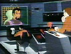
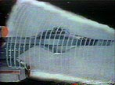
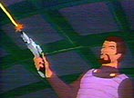
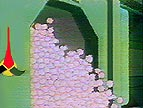
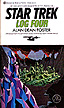

|
MANCHETE
DO EPISDIO
Histria
traz de volta elementos de
sucesso da Srie Clssica de Jornada
Prximo
episdio
Sinopse:
Data Estelar: 5392.4.
A Enterprise escolta dois cargueiros carregando suprimentos do gro
quadrotriticale com destino ao planeta Sherman, para combater uma
escassez de alimentos. No meio do caminho, eles detectam um cruzador de
batalha Klingon atacando uma pequena nave.
 Eles
salvam o nico tripulante da nave sob ataque, o comerciante Cyrano
Jones. A nave Klingon, sob o comando de Koloth, ataca a Enterprise e
exige a devoluo de Jones, acusando-o de ser um sabotador ecolgico
por vender alguns Pingos em um planeta Klingon.
Graas a uma nova arma, os Klingons conseguem imobilizar a Enterprise,
aps explodir o sistema de propulso das naves cargueiras. O
quadrotriticale transportado para a nave de Kirk, mas com os ataques
dos Klingons os gros acabam vazando de seus tonis de armazenamento e
so vorazmente consumido pelos Pingos, que graas a uma modificao
gentica no se reproduzem normalmente --eles formam "Pingos
gigantes" (na verdade uma colnia de Pingos), em vez de vrios
animais individuais.
 Spock
sugere que eles transportem os Pingos para a nave de Koloth, a fim de
imobilizar os Klingons. O plano faz com que o capito Klingon desista
de levar Jones e se contente apenas com o Glommer --uma criatura sob
posse do comerciante que nada mais que um predador natural dos
Pingos.
Mas nem o Glommer capaz de lidar com os Pingos gigantes, deixando
mais uma vez os Klingons em maus lenis com as dceis criaturas.
Comentrios:
"More Tribbles, More Troubles" um episdio
definitivamente divertido. Embora fique claro que algumas adaptaes
foram feitas e algumas preocupaes, deixadas de lado com o propsito
de manter a histria adequada ao pblico infantil, isso no faz com
que ele deixe de ser um clssico, assim como os outros episdios que
envolvem os Pingos.
No mesmo tom de seu predecessor ("The Trouble With Tribbles"),
o episdio aproveita a popularidade do episdio da Srie Clssica,
responsvel por misturar de forma perfeita uma histria relevante
envolvendo interesses da Federao e uma grande dose de humor.
 Mais
uma vez, os Klingons acabam com as mos cheias de Pingos. Tambm
destaque a figura simptica e trapaceira de Cyrano Jones, um elemento
agradvel e familiar inserido no episdio.
Interessante o uso aplicado nova arma Klingon, capaz de manter uma
nave sem ao durante uma batalha. Este equipamento jamais foi visto
ou mencionado novamente na histria de Jornada.
Alis, h outros dados que depem contra a "canonicidade"
do episdio (a incorporao da histria na cronologia oficial de Jornada
nas Estrelas) --um dos maiores fantasmas que paira sobre a Srie
Animada.
Durante o episdio de Deep Space Nine "Trials and
Tribble-ations", Jadzia Dax conversa com Sisko sobre Koloth.
Ela diz que o comandante Klingon lamentou nunca ter enfrentado Kirk em
batalha.
S que isso acontece neste episdio animado! Parece que os roteiristas
de DS9 optaram por contrariar este episdio, propositalmente ou por
desconhecimento.
 Por
outro lado, podemos salvar a histria toda supondo que a segunda
complicao de Koloth com os Pingos tenha sido to embaraosa que
ele tenha preferido nem mencionar a Dax o ocorrido. Neste caso, como em
todos os outros episdios da Srie Animada, considerar "apcrifo"
ou "cannico" fica ao gosto do espectador.
Citaes:
McCoy - "There's no such a thing as a safe
tribble."
("Esse papo de Pingo seguro no existe.")
Scotty - "We've tribbles on the ship, quadrotriticale in the
corridors, Klingons in the quadrant... it can ruin your whole day,
sir!"
("Temos Pingos na nave, quadrotriticale nos corredores, Klingons no
quadrante... isso pode arruinar o seu dia, senhor!")
Trivia:
 Esse episdio foi uma sequncia ao episdio da Srie Clssica
"The Trouble With Tribbles", tambm escrito por David
Gerrold.
Esse episdio foi uma sequncia ao episdio da Srie Clssica
"The Trouble With Tribbles", tambm escrito por David
Gerrold.
Ao contrrio do que vimos na srie original, os Pingos neste episdio
so todos da mesma cor: rosa.
O autor deste episdio, David Gerrold, tambm escreveu outro episdio
da Srie Animada ("Bem"). Ele tambm escreveu
o roteiro do episdio clssico "The Cloudminders".
Gerrold declarou que tanto "Bem" quanto "More
Troubles, More Tribbles" foram escritos originalmente como possveis
episdios para a terceira temporada da Srie Clssica. Ele
disse que Gene Roddenberry havia pedido a ele para escrever uma sequncia
com os Pingos, que foi descartada quando Fred Freiberger assumiu a produo
da srie.
Gerrold tambm fez a voz do personagem Korax no episdio animado.
Korax havia aparecido pela primeira vez em Jornada no episdio "The
Trouble With Tribbles", quando foi interpretado por Michael
Pataki.
O ator Stanley Adams reprisou seu papel como Cyrano Jones, ao dublar
este episdio.
O capito Klingon Koloth foi visto pela primeira vez em "The
Trouble With Tribbles", quando foi interpretado por William
Campbell (o mesmo ator que encarnou Trelane na Srie Clssica).
O Klingon foi dublado na Srie Animada por James Doohan, mas
Campbell voltaria a Jornada em Deep Space Nine,
interpretando novamente Koloth.
H dois bloopers neste episdio: em uma cena, as portas do
turboelevador na ponte esto posicionadas mais a direita do que
deveriam. Em uma outra sequncia, Koloth colocado por engano na
ponte da Enterprise, em vez de na tela principal.

"More Tribbles, More Troubles" foi novelizado por Alan
Dean Foster (o escritor de "Jornada nas Estrelas - O Filme")
no livro "Star Trek Log Four", publicado pela Ballantine Books
em maro de 1975. Tambm no livro esto novelizaes dos episdios
"The Time Trap" e "The Terratin Incident".
Ficha
tcnica:
Escrito por David Gerrold
Dirio de Hal Sutherland
Exibido em 06/10/1973
Produo: 01
Elenco:
William Shatner como James Tiberius Kirk
Leonard Nimoy como Spock
DeForest Kelley como Leonard McCoy
James Doohan como Montgomery Scott
George Takei como Hikaru Sulu
Nichelle Nichols como Uhura
Elenco convidado:
Stanley Adams como Cyrano Jones
David Gerrold como Korax
James Doohan como Koloth
Prximo
episdio
|